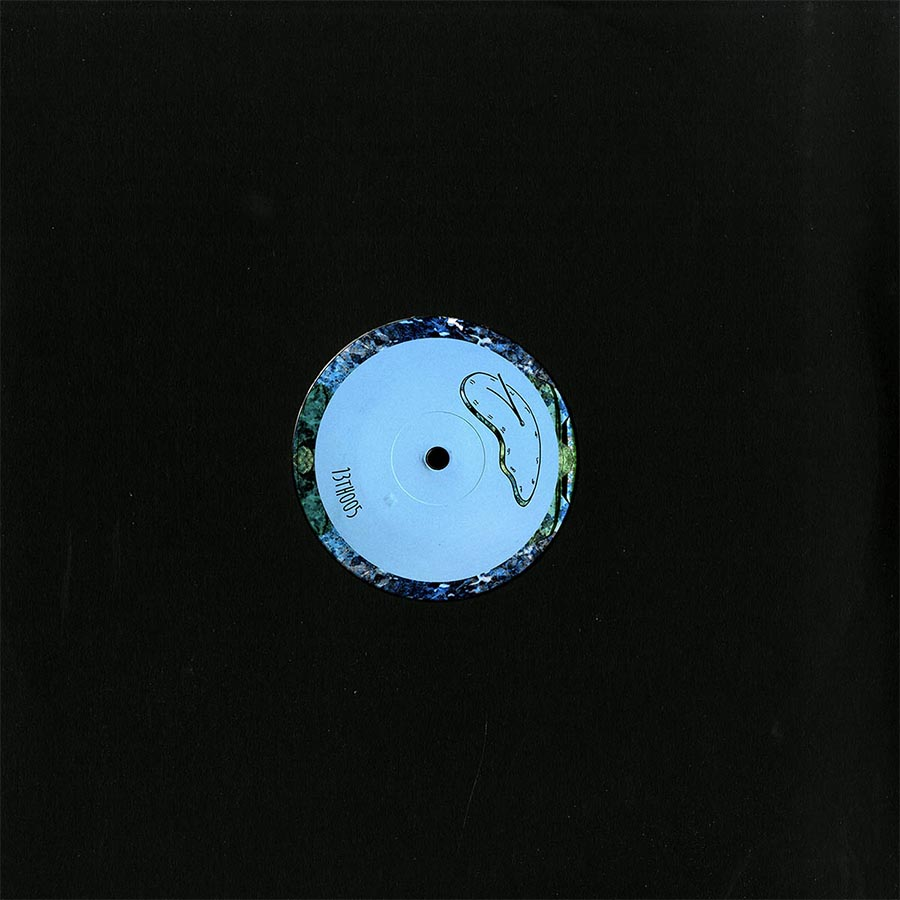

Our fifth V/A is a no-holds-barred affair of nighttime stormers from label veteran deRijk and Aussie newcomer Soul Wun. Bristolian deRijk kicks off the EP with the breezy, bongo-boogie bonanza “Indian Summer,” a true balearic groover fit for any rooftop sunset. And rounding out the A-side is “An Evening With Soplica,” a dreamy soundscape anchored by deep synth hooks and buoyed by soft hi-hats and rhythmic cowbell hits - percussive bliss.
Soul Wun takes things over on the flip with the dusty lounge house tune “Naima Blue,” metered perfectly by reverberating sax hits and delicate piano chords. And “For George” brings the EP home: y’all know how we like a B2 that pulls at those sunrise warrior heartstrings, and this jazzy masterpiece is no exception.
Release Date: June 5, 2020
